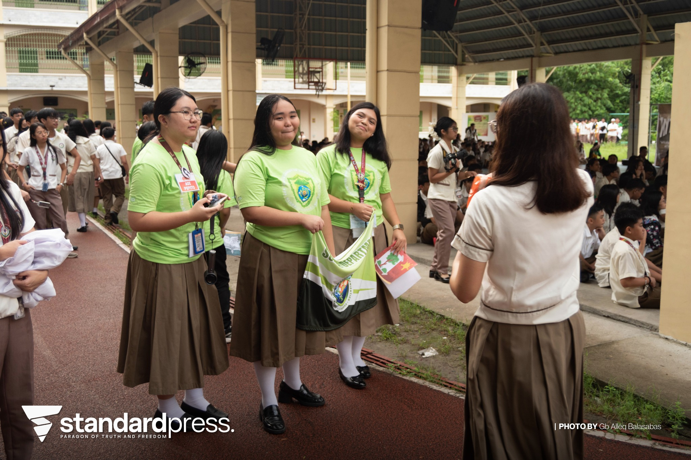

The most important thing I learned during Science Month is how science is connected to everyday life and how it helps solve real-world problems. The event showed me that science is not just about theories and experiments but also about innovation, curiosity, and discovering better ways to improve lives and protect the environment.
I can apply what I learned by being more observant, thinking critically, and using scientific knowledge to make responsible decisions. This includes practicing proper waste disposal, understanding health and safety, and being open to learning through experiments or problem-solving. Applying science in simple ways can make everyday tasks more practical and efficient.
Yes, I participated by supporting the activities and presentations during Science Month especially in the WINS corner and research deferense performed in our school. Whether through helping classmates, watching the performers, or engaging in the panelist's questions, I made sure to involve myself and learn from the event. Being present and attentive also helped me appreciate other students’ efforts and creativity, which also improved me as a student and person.
If I were to explain Science Month to a classmate, I would say it is a celebration that encourages students to explore scientific ideas in fun and meaningful ways. I would explain that it makes science more interesting by showing its use in real life, from technology and health to nature and the environment. It’s a way to inspire curiosity and new discoveries.
Events like Science Month are important because they bring the subject to life and help students see its relevance beyond the classroom. They encourage creativity, teamwork, and hands-on learning, which make the lessons more memorable. Having subject-based events also motivates students and highlights the importance of each field in education and society.
PLAY THIS WHILE SCROLLING FOR BETTER EXPERIENCE!!